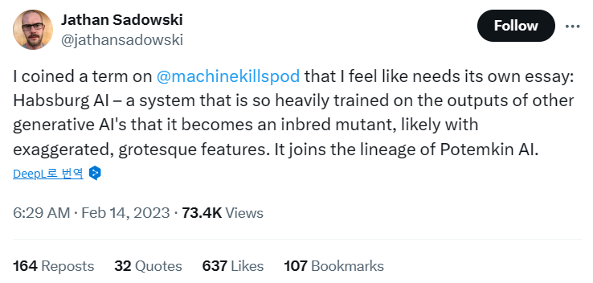
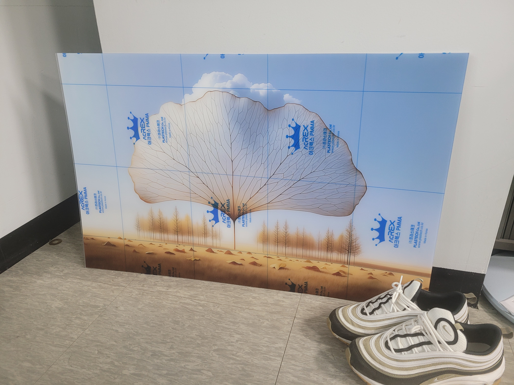

contributor: 서울대학교 동창회
- 서울대학교 총동창회와 미술대학 동창회에서는 2023년에 이어 2024년에 특색있는 행사를 열었습니다.
- “전공이 미술이 아님에도 불구하고 그림에 대한 열정을 이어오고 있는 동문들의 작품을 소개”하는 자리를 여는,
- “숨은 예술가들”이라는 이름의 행사입니다.
서울대학교총동창회: 숨은 예술가들 2023 공지 (2023.10.10.)
helloDD: 과학자·의사·목사 작가 ‘특별한 전시회’ “AI작품부터 예술, 문화 공존”
- 먀스터피스가 없었다면 숨은 예술가들도 없었을 것입니다.
- 이 행사에서 만난 분께 추천을 받아 미술전에 출품을 하고 작품을 판매하는 경험을 할 수 있었습니다.
- 너무 감사한 인연이지만, 본인께 누가 될까 싶어 이름은 공개하지 않기로 합니다.
- 기회를 주신 모든 분들께 감사드리며 당시 전시한 작품에 대한 설명을 기록으로 남깁니다.
1. 작품
1.1. 그림
- 챗달이(ChatGPT DALL.E3)로 만든 그림에 은행잎나무라는 제목을 붙였습니다.
- 한 번에 그려진 그림은 아닙니다.
- 의도를 반영하고자, 그리고 보기 좋은 그림을 만들고자 다양한 시도를 했습니다.
- 여러 차례 프롬프트를 바꾸기도 하고 재생성을 하기도 하면서 중간 과정들을 거쳐 최종 그림을 얻었습니다.

1.2. 의도
Habsburg AI
Smithonian Magazine: The Distinctive ‘Habsburg Jaw’ Was Likely the Result of the Royal Family’s Inbreeding
wikimedia commons: Ginko-Gegenlicht-web.jpg
- 전시회를 떠나 최근 주목받는 생성형 인공지능(Generative AI) 모델들을 보며 떠오른 이미지가 있었습니다.
- AI 모델은 데이터에서 만들어지지만, 생성형 AI 모델은 데이터를 만들어 냅니다.
- 이 능력을 바탕으로 AI 모델을 개발하는 분들이 부족한 데이터를 AI 모델을 이용해 채웁니다.
- 특히 많은 오픈소스 언어 모델 개발에 GPT-4를 이용해 생성된 데이터가 사용되고 있습니다.
- 이렇게 자가교배식으로 개발되는 AI를 Habsburg AI라고 합니다.
- 언뜻 보기에 매우 효율적인 방법이지만 유전병을 유발할 수 있습니다.

- 합스부르크 왕가의 턱이 길어졌던 것처럼, 합스부르크 AI 모델은 편향(bias)과 환각(hallunination) 계승이 문제가 됩니다.
- 이를 그림으로 표현하고자 나무보다 훨씬 거대하게 자란 나뭇잎을 주 소재로 삼았습니다.
- 구름에 닿을 만큼 자란 나뭇잎을 표현했는데, 이 구름은 높이, 즉 영향력을 의미하기도 하지만
- 한편으로는 생성형 AI가 사람들에게 닿는 경로인 클라우드 컴퓨팅을 의미하기도 합니다.
- 클라우드 컴퓨팅이라 구름을 그린다는 것이 다소 직설적이라 촌스럽게 느껴지지만,
- 그림의 미적 요소가 향상되는 듯 하여 채택했습니다.
- 대상으로는 은행잎을 선정했습니다.
- 아름답기도 하지만 생성형 AI가 환각을 일으키는 대상이기 때문입니다.
- 은행나무는 활엽수가 아니라 침엽수입니다.
- 대개 침엽수(針葉樹)라면 소나무처럼 바늘 모양의 잎을 가지지만 은행잎은 이 바늘 모양의 잎이 다닥다닥 붙어 넓은 모양을 이루고 있는, 매우 특이한 침엽수입니다.

- 그러나 생성AI (정확히는 ChatGPT DALL.E3)는 이런 특징을 모릅니다.
- 그저 넓은 나뭇잎이니 그럴싸하게 잎맥을 그려 넣지만 틀린 이야기입니다.
- 표현이 덜 된 부분이 있습니다.
- 바닥에 굴러다니는 낙엽 대신, 말라 굴러다니는 나무를 놓고 싶었는데 여러번 시도해도 잘 안 되더군요.
- 관심을 받지 못하고 말라비틀어지는 실세계를 표현하고 싶었습니다.
2. 전시
2.1. Upscale
- DALL.E에서 만드는 그림은 1024 x 1024가 기본입니다.
- 종횡비를 16:9로 지정하면 1792 x 1024가 되긴 하지만 인쇄엔 역부족입니다.
- 그냥 보간(interpolation)을 이용해 확대하면 전체적으로 흐려집니다.
- 딥러닝을 이용한 업스케일이 이럴 때 유용합니다.
- Upscayl에서 무료로 업스케일링을 할 수 있습니다.
- 여러 옵션 중 General Photo (Fast REAL-ESRGAN)을 선택해 빠르게 작업합니다.
2.2. 인쇄

- 대덕특구의 Space-S에서 인쇄에 도움을 주셨습니다.
- 처음에는 크게 걸 욕심에 대형 아크릴 인쇄를 했습니다.
- 그런데 못으로 벽에 걸어야 한다는 규정이 걸림돌이 되었습니다.
- 구멍을 뚫고 그림 뒤에 철사를 걸면 된다고 하는데, 작업 시간을 도저히 낼 수 없었습니다.
- 아쉬운대로 시중에서 당일 구할 수 있던 최대 크기인 A3 크기로 다시 인쇄를 부탁드렸고
- 아크릴이 아닌 종이에 인쇄를 해서 액자에 넣어 보냈습니다.
- 역시 Space-S에 인쇄를 부탁드려 고품질로 인쇄를 할 수 있었고,
- 한켠에 볼펜으로 서명을 해서 넣었습니다.
2.3. 전시
- 4월 2일(화)부터 행사가 진행되었지만 평일이라 개막식에 참석할 수 없었습니다.
- helloDD 기사를 통해 뒤늦게라도 현장 사진을 볼 수 있는 것이 위안입니다.
- 정식으로 도록에 작품이 실린 것을 확인 후 가족에게 알렸습니다.
- 바쁜 일정으로 제출 일정을 못맞출 수 있다고 생각했고,
- 혹시나 주최측에서 거절이라도 당하면 어쩔까 싶은 두려움도 있었습니다.
- 정식 미술전에는 첫 제출이니까요.
- 부모님께서 먼저 다녀가셔서 축하 화분을 놓아주셨습니다.
- 저는 가족들과 함께 일요일에야 가서 작품을 볼 수 있었습니다.
- 다른 작품과 함께 전시된 그림을 보니 느낌이 새롭더군요.
2.4. 판매
- 작품을 제출할 때, 작품 판매가를 적어 내는 칸이 있었습니다.
- 누가 내 작품을 사겠나 싶었지만 형식이 그러하니 적어 냈습니다.
- 제 기준으로 적지 않은 금액을 썼는데, 쓰면서도 느낌이 이상했습니다.
- 전시회 이틀째인 4월 3일, 그림이 팔렸다는 전화를 받았습니다.
- 전날 거의 밤을 샜기 때문에 오전에 정신없는 일정을 일단 마무리하고 15분 알람을 맞춘 후 의자에서 잠시 눈을 붙이던 중이었습니다.
- 비몽사몽간에 받은 전화인데도 잠이 깨더군요.
- 품질보증서를 작성해야 하니 폐관 전에 꼭 방문해달라는 요청이었습니다.
- 일요일에 가족과 함께 들른 전시회에서 품질보증서를 작성했습니다.
- 내 그림이 인쇄되어 있고 아래 진품임을 보증한다는 내용의 한 장짜리 서류였습니다.
- 아무리 생각해도 장난으로 살 금액은 아닌데, 누구였을까 궁금하던 차에 행사를 기획하신 분을 만나 이야기를 들을 수 있었습니다.
- 80대의 현역 작가분께서 구입하셨다고 하더군요.
- 깜짝 놀랐습니다.
- 작품이 걸린 것만도 너무 기분이 좋았는데,
- 판매까지 되고,
- 심지어 작가께서 선택해주셨다는 데 더 놀랐습니다.
- 한편으로는 AI 그림이 낯설거나 거부감이 들 수도 있는데 선택해주신 넓은 마음이 감사했습니다.
3. 맺음말
- 몇몇 친구들과 가족에게는 이야기했습니다만, 은퇴 후 개인전을 하는 꿈이 있습니다.
- 그림을 직업으로 선택하지는 않았지만 너무나 좋아하기 때문입니다.
- 사람들과 자주 어울리지 않는 성격상 감정을 배설하는 거의 유일한 통로이기도 하고
- 다른 재주가 별로 없기도 합니다.
- 모순되지만, 그러면서도 미술전 전시를 타진해본 적은 없습니다.
- 추천을 받아 전시를 하고 판매까지 하면서 자신감이 많이 생겼습니다.
- 사실 업무적으로 너무 힘든 기간이었는데 여기서 얻은 기쁨으로 버틸 정도였습니다.
- 앞으로도 본업을 우선하겠지만, 혼자 그림을 그리기보다 더 많은 분들과 나눌 기회를 적극적으로 찾아보려고 합니다.
- 도움주신 모든 인연과 지지해준 가족들께 감사드립니다.